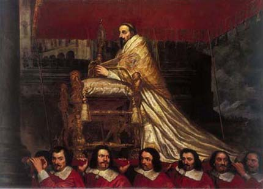

Nato a Siena col nome di Fabio Chigi, membro dei Chigi nota famiglia di banchieri toscani, e bisnipote di Papa Paolo V, venne educato in privato da un tutore e ricevette la laurea in filosofia, diritto canonico e teologia all'Università di Siena.
Fin da giovane mostrò spiccate doti religiose e letterarie, essendo descritto come austero e zelante nella fede.
Nel 1629 fu nominato vice-legato pontificio di Ferrara, incarico che conservò fino al 1634, quando giunse a Malta in qualità di Inquisitore.
L'8 gennaio 1635 fu eletto vescovo di Nardò ed fu consacrato vescovo il 1º luglio dello stesso anno. Rimase nella sua diocesi fino al 1639, anno della nomina a Nunzio pontificio di Colonia (1639-1651).
Fu creato cardinale da Papa Innocenzo X nel concistoro del 19 febbraio 1652 e il 12 marzo dello stesso anno gli fu conferito il titolo di Santa Maria del Popolo.
Il 13 maggio 1653 fu eletto vescovo di Imola.
Papa Innocenzo X richiamò Chigi a Roma e lo rese in seguito cardinale segretario di stato.

Alla morte di Innocenzo, Chigi, candidato favorito dalla Spagna, venne eletto Papa dopo ottanta giorni di conclave, il 7 aprile 1655.
Il conclave riteneva che egli si opponesse duramente al nepotismo all'epoca prevalente.
In realtà, nel primo anno di regno, Alessandro VII visse semplicemente e vietò ai parenti persino di fargli visita a Roma; ma nel concistoro del 24 aprile 1656, annunciò che il fratello e i nipoti lo avrebbero raggiunto a Roma per assisterlo.
L'amministrazione venne messa ampiamente nelle mani dei suoi parenti, e il nepotismo divenne cosparso di lusso come non mai nel periodo dei papati barocchi: egli diede loro gli incarichi civili ed ecclesiastici più remunerativi, e palazzi e proprietà principesche, adatte ai Chigi di Siena.
Alessandro non apprezzava gli affari di stato, preferendo la letteratura e la filosofia. Egli incoraggiò inoltre l'architettura e il miglioramento generale di Roma, dove fece abbattere abitazioni per raddrizzare ed allargare le strade,
mentre nella politica estera i suoi istinti non furono né umanistici, né di successo.
Morì nel 1667.

 ACCADDE OGGI
ACCADDE OGGI